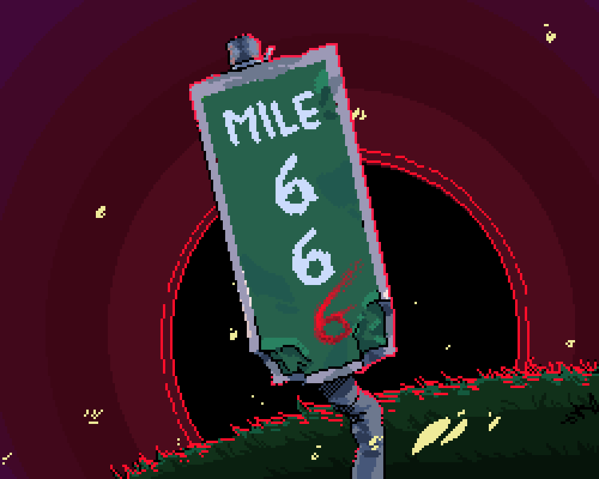
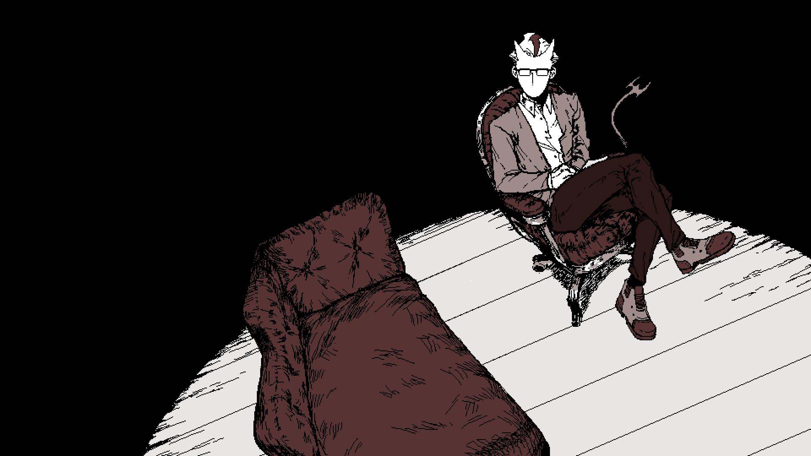
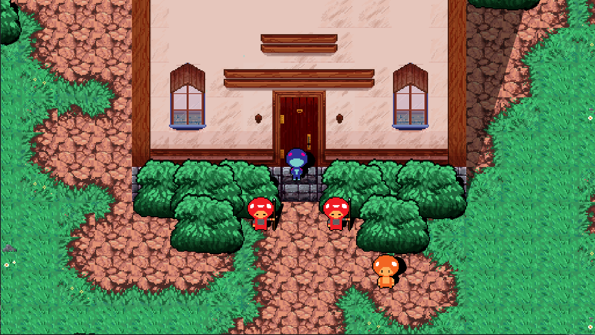
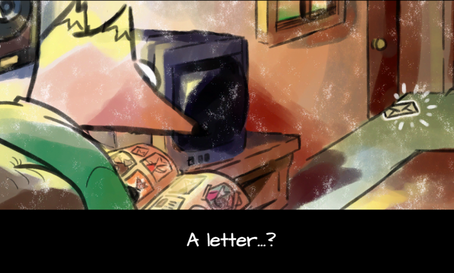

PROJECTS

Mile 666 is a prototype game where you play as a tank driver as you are deployed to combat the
giant
hell portal that has opened. As you make your way towards destroying the gate to hell, you must
shoot
down enemies and avoid obstacles in a bullet-hell, infinite-runner mashup game.

Done for Global Game Jam 2020, at Playcrafting + Microsoft (NYC)!
Incubus M.D is a platform game about exploring the mind of a patient and diagnosing their
problems.
As
the game progresses, you learn detailed information about each patient and their issues. Each
level
is
inspired by each character's fears, dreams, and thoughts. You will complete each mission by
defeating
the final boss.
Narrative Game
Spring 2020

Narrative Game Mod done in 2 weeks for a game development course. The mod introduces several new
npcs, different dialogues, total reskin, new area, as well as shaders.
Challenge the tower as you encounter Duke Blue and challenge him in a duel for his estate! Each
floor explores combat in a different video game genre as you challenge Duke Blue over and over!
Currently only the first floor is implemented.

Done for Global Game Jam 2019 at GGJ China 2019 X CiGA Shanghai-Minghang!
Restoration follows the elderly Martin the Fox. He has received an eviction notice in the mail,
so he attempts to get to the top of a multi-purpose office building and speak with the CEO. He
is a very sentimental father, as he keeps all of his sacred memories in his scrapbook. The power
of reliving his memories will soon come into play as he sneaks past security and knocks out
baddies. An old man getting violent? Not exactly. A dungeon crawler, with all original assets.
back to top